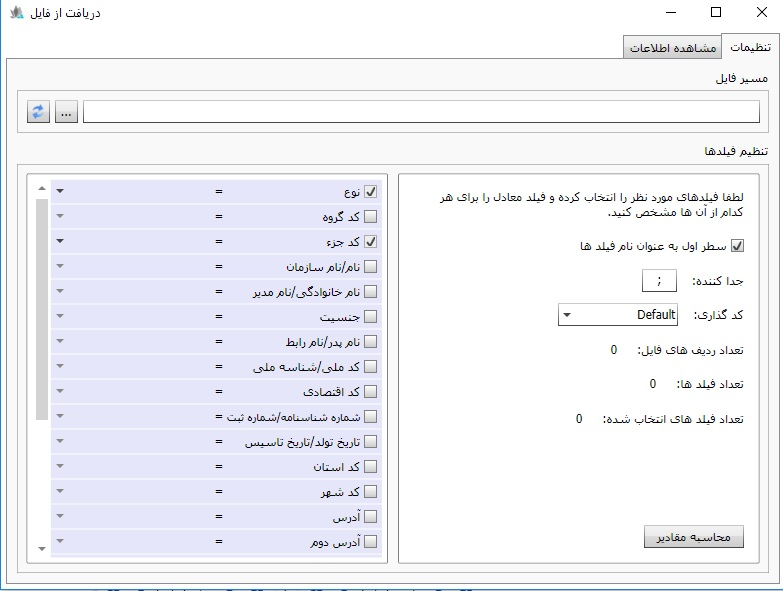
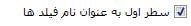
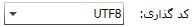
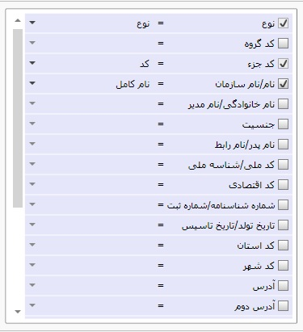
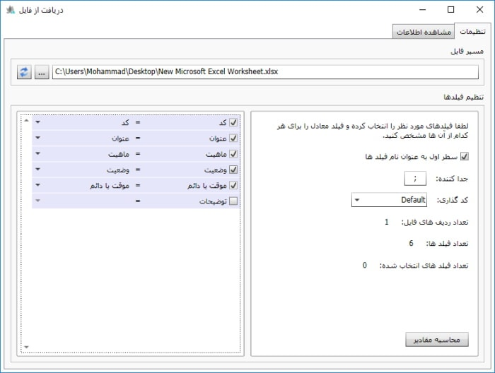
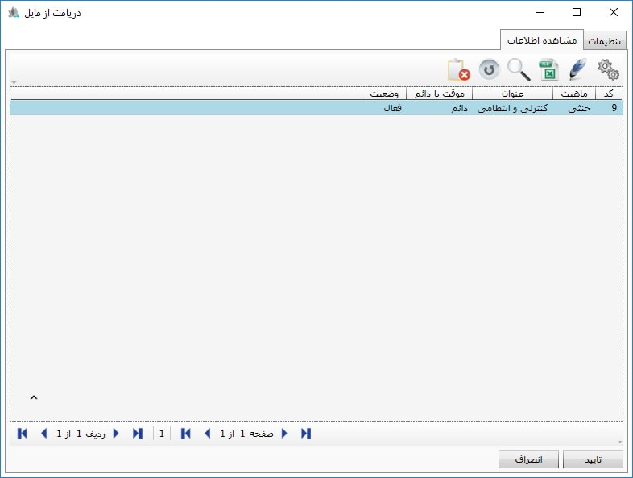

به صورت کلی در قسمت بالای همه جداول در نرم افزار که این شمایل وجود داشته باشد، امکان دریافت از فایل در آن جدول فراهم است. برای شروع روی شمایل دریافت از فایل کلیک کنید تا صفحه زیر باز شود.
این صفحه دارای دو سربرگ می باشد که در حالت پیش فرض بر روی تنظیمات قرار دارد. که در ادامه به توضیح هر کدام میپردازیم.
1. تنظیمات
در این صفحه در
قسمت مسیر فایل، با کلیک بر روی بازکردن
 مسیر فایل ورودی(فایل ورودی به صورت Excel
و Text) را مشخص می کنیم. از گزینه
مسیر فایل ورودی(فایل ورودی به صورت Excel
و Text) را مشخص می کنیم. از گزینه
 برای بازخوانی مجدد فایل استفاده می شود.
برای بازخوانی مجدد فایل استفاده می شود.
قسمت دوم در صفحه تنظیمات تنظیم فیلدها می باشد که در این قسمت تنظیمات مربوط به فایل ورودی را مشخص میکنیم که به شرح زیر می باشد:
با انتخاب این گزینه برای هماهنگ کردن ستون های فایل ورودی و ستون های موجود در نرم افزار، در فایل ورودی ردیف اول را به عنوان نام فیلد در نظر میگیریم.
در این قسمت نوع جداکننده ستون های فایل ورودی را مشخص میکنیم .
در این قسمت نوع کدگذاری فایل ورودی را مشخص میکنیم.

تعداد ردیف های فایل ورودی را بعد از انتخاب فایل در قسمت مسیر فایل نمایش میدهد.

تعداد ستون های فایل ورودی را نمایش می دهد.

تعداد فیلد های انتخاب شده در فایل ورودی را نمایش میدهد.
در این قسمت فیلدهای معادل در نرم افزار و فایل ورودی را مشخص میکنیم.شکل زیر این صفحه را بعد انجام تنظیمات بالا نمایش میدهد:

پس از انجام تنظیمات مر بوط به فایل ورودی بر روی دکمه
 کلیک کرده تا اطلاعات فایل ورودی در صفحه مشاهده اطلاعات
نمایش داده شود این صفحه به شکل زیر می باشد.
کلیک کرده تا اطلاعات فایل ورودی در صفحه مشاهده اطلاعات
نمایش داده شود این صفحه به شکل زیر می باشد.
2. مشاهده اطلاعات
در صورتی که اطلاعات نمایش داده شده در این صفحه با اطلاعات فایل ورودی مطابقت دارد بر روی گزینه تایید کلیک کنید تا اطلاعات وارد نرم افزار شود.